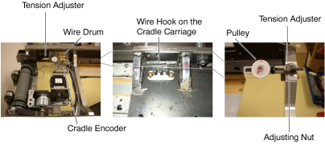
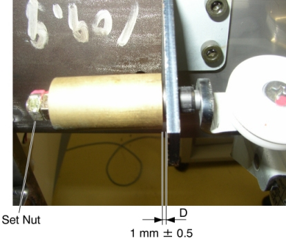

Operating Documentation
Direction 5193575-800, Rev# 5
LightSpeed 7.X Service Information - Adv
Operating Documentation |
| Required Persons | Preliminary Reqs | Procedure | Finalization |
|---|---|---|---|
| 1 |
| Last Revised: | 05 June 2008 |
| Item | Qty | Effectivity | Part# | Manufacturer | |
|---|---|---|---|---|---|
| Cradle Wire (5127502) | 1 | - | - | - | |
Raise the Table to maximum height.
Perform this step if applicable:
(For Global PET/CT Table, with fixed position IMS) Move the Cradle to OUT limit position.
(For Globla PET/CT Table) Move the Cradle and IMS to OUT limit position.
(For GT1700 and GT2000 Table) Move the Cradle and IMS to OUT limit position.
Remove power from Table by turning off 120VAC, Axial Drive and HVDC switches on Service Switch Panel.
Remove the following Table components and covers:
Cradle
Top Cover (Right/Left)
Rear Top Cover
Rail Cover (Right/Left)
Top Plate (Front/Middle/Rear)
Illustration 1: Table Covers

Loosen the adjusting nut, to remove tension from the cradle wire.
Remove the cradle wire from the wire hook on the cradle carriage.
Illustration 2: Cradle Encoder Assembly

Loosen 2 set screws on the wire drum, and remove the wire drum from the cradle encoder, then remove the cradle wire assy from the Table.
Install the new cradle wire assy:
Attach the wire drum to the cradle encoder, and tighten the 2 set screws, to fasten the wire drum.
Route the cradle wire as shown in Illustration 2.
Set the cradle wire to the wire hook as shown in illustration below.
Illustration 3: Wire Hook on the Cradle Carriage

Take off the adhesive tape from the wire drum.
Rotate the adjusting nut in the CW direction until the distance D is 1 ± 0.5 mm.
Illustration 4: Tension Adjuster

Power up the Table from the Service Switch Panel.
Perform Table Characterization.
Turn off all 3 switches (Axial Drive, HVDC, 120VAC), and re-install the Table covers.